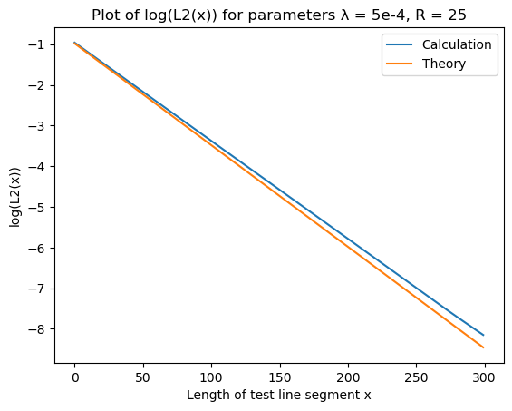
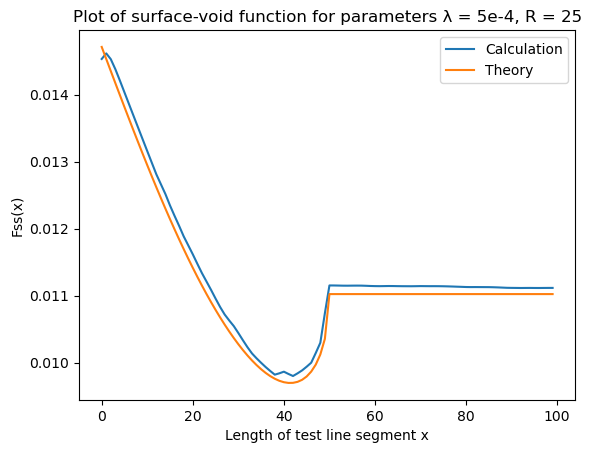
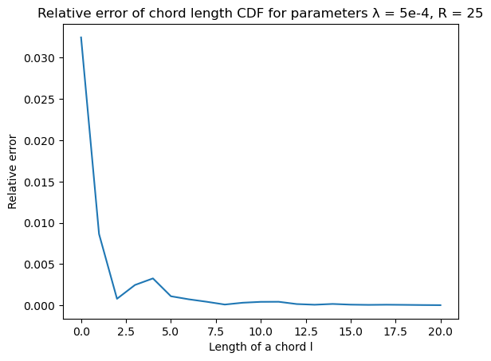
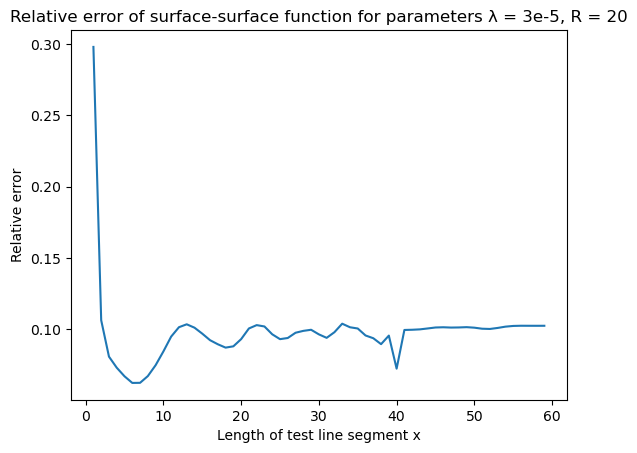
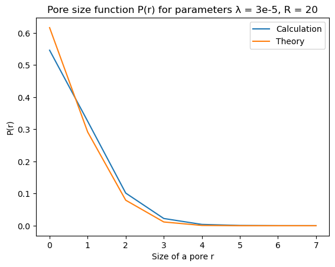
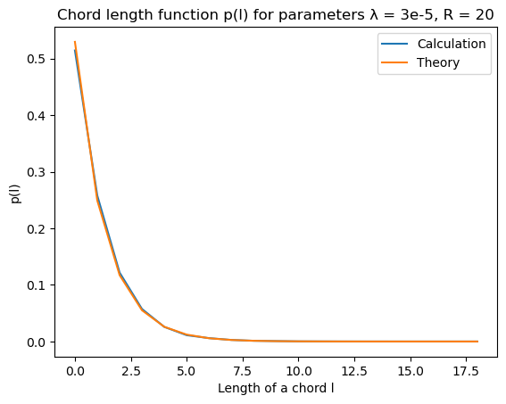

Directional Functions
This is a documentation for CorrelationFunctions.Directional module. The documentation is divided into the following topics:
- Correlation Functions page contains the exhaustive list of correlation functions supported by this package.
- Accessing Data page describes how to access data returned by correlation functions.
- Boundary Conditions page describes boundary conditions when calculations cross the boundary of a system.
- Directions page describes directions along which the correlation functions are computed.
- Indicator Functions page describes how to construct customary indicator functions.
- Results page contains comparison of correlation functions from this package with some known theoretical results.
Correlation Functions
The following correlation functions are supported:
- Lineal-path $L_2$ function.
- Two point $S_2$ function.
- Cluster $C_2$ function.
- Surface-surface $F_{ss}$ function.
- Surface-void $F_{sv}$ function.
- Pore size $P$ function.
- Chord length $p$ function.
CorrelationFunctions.Directional.l2 — Functionl2(array, phase; [len][, directions,] periodic = false)Calculate L₂ (lineal path) correlation function for one-, two- or three-dimensional multiphase system.
L₂(x) equals to probability that all elements of a line segment with length x cut from the array belong to the same phase. This implementation calculates L₂(x) for all xes in the range from 1 to len which defaults to half of the minimal dimension of the array.
Examples
julia> l2([1,1,1,0,1,1], 1; len = 6)[DirX()]
6-element Array{Float64,1}:
0.8333333333333334
0.6
0.25
0.0
0.0
0.0For a list of possible dimensions, see also: Utilities.AbstractDirection.
CorrelationFunctions.Directional.s2 — Functions2(array, phase[; len][, plans][, directions,] periodic = false)
s2(array, SeparableIndicator(χ₁, χ₂)[; len][, plans][,directions,] periodic = false)
s2(array, InseparableIndicator(χ)[; len][,directions,] periodic = false)Calculate S₂ (two point) correlation function for one-, two- or three-dimensional multiphase system.
S₂(x) equals to probability that corner elements of a line segment with the length x cut from the array belong to the same phase. This implementation calculates S₂(x) for all xes in the range from 1 to len which defaults to half of the minimal dimenstion of the array.
More generally, you can provide indicator function χ instead of phase. In this case S₂ function calculates probability of χ(x, y) returing true where x and y are two corners of a line segment. Indicator functions must be wrapped in either SeparableIndicator or InseparableIndicator. Some computations for separable indicator functions are optimized.
An argument plans can be used to support precomputed FFT plans which can be helpful if you call s2 often with the array of the same size. Plans can be computed with S2FTPlans constructor.
Examples
julia> s2([1,1,1,0,1,1], 1; len = 6)[DirX()]
6-element Array{Float64,1}:
0.8333333333333334
0.6
0.5
0.6666666666666666
1.0
1.0See also: Utilities.AbstractDirection, SeparableIndicator, InseparableIndicator, S2FTPlans.
CorrelationFunctions.Directional.c2 — Functionc2(array, phase[; len,][directions,] periodic = false)Calculate C₂ (cluster) correlation function for one-, two- or three-dimensional multiphase system.
C₂(x) equals to probability that corner elements of a line segment with the length x cut from the array belong to the same cluster of the specific phase. This implementation calculates C2 for all xes in the range from 1 to len which defaults to half of the minimal dimension of the array.
Examples
julia> c2([1,1,1,0,1,1], 1; len = 6)[DirX()]
6-element Array{Float64,1}:
0.8333333333333334
0.6
0.25
0.0
0.0
0.0For a list of possible dimensions, see also: Utilities.AbstractDirection.
CorrelationFunctions.Directional.surf2 — Functionsurf2(array, phase[; len][, directions][, plans,] periodic = false, filter)Calculate surface-surface correlation function for one-, two- or three-dimensional multiphase system.
Surface-surface CF equals to probability that corner elements of a line segment with the length x cut from the array belong to the boundary of a cluster with the phase phase. This implementation calculates surface-surface function for all xs in the range from 1 to len which defaults to half of the minimal dimension of the array.
You can chose how an edge between phases is selected by passing filter argument of type Utilities.AbstractKernel.
If phase is a function it is applied to array to select the phase of interest, otherwise the phase of interest is selected by testing elements of array for equality with phase.
An argument plans can be used to support precomputed FFT plans which can be helpful if you call surf2 often with the array of the same size. Plans can be computed with S2FTPlans constructor.
See also: Utilities.AbstractDirection, S2FTPlans, Utilities.AbstractKernel.
CorrelationFunctions.Directional.surfvoid — Functionsurfvoid(array, phase[; len][, directions][, plans,] void_phase = 0, periodic = false, filter)Calculate surface-void correlation function for one-, two- or three-dimensional multiphase system.
Surface-void CF equals to probability that one corner of a line segment with the length x cut from the array belongs to the boundary of a cluster with the phase phase and the other belongs to the void phase 0. This implementation calculates surface-void function for all xs in the range from 1 to len which defaults to half of the minimal dimension of the array.
You can chose how an edge between phases is selected by passing filter argument of type Utilities.AbstractKernel.
If phase is a function it is applied to array to select the phase of interest, otherwise the phase of interest is selected by testing elements of array for equality with phase. void_phase can also be either a function or some other object and is used as an indicator for the void phase.
An argument plans can be used to support precomputed FFT plans which can be helpful if you call surfvoid often with the array of the same size. Plans can be computed with S2FTPlans constructor.
See also: Utilities.AbstractDirection, S2FTPlans, Utilities.AbstractKernel.
CorrelationFunctions.Directional.pore_size — Functionpore_size(array, phase = 0; nbins = 10, periodic = false)Calculate pore size correlation function for one-, two- or three-dimensional multiphase system.
Pore size correlation function P(x) equals to probability of inserting a ball with radius R ∈ [x, x + δx] into a system so that it lies entirely in the phase phase.
This implementation divides the range of possible radii into nbins subranges and returns a normalized histogram of radii. This is roughly equal to integrating P(x) for each subrange.
CorrelationFunctions.Directional.chord_length — Functionchord_length(array, phase[; directions,] nbins = 10)Calculate chord length correlation function for one-, two- or three-dimensional multiphase system.
Cord length function p(x) equals to probability of finding a chord whose length is in the range [x, x+δx] and which lies entirely in the phase phase. A chord is a line segment which touches the boundary of a same-phase cluster with its ends.
This implementation bins chord lengths into nbins bins and returns normalized histogram on collected data along with mean chord length and standard deviation.
Examples
julia> chord_length([1, 0, 0, 0, 0, 1, 0, 1], 0)
Chord length info (mean = 2.5, std = 2.1213203435596424)For a list of possible dimensions, see also: Utilities.AbstractDirection.
The pore_size function is also reexported from CorrelationFunctions directly, not being actually a "directional" function.
Accessing Data
The most functions in this package (with exception to pore_size and chord_length) return a value of type CorrelationData:
using CorrelationFunctions.Directional
using Random
a = l2(rand(MersenneTwister(1453), 0:1, (100, 100, 100)), 1)CorrelationFunctions.Directional.CorrelationData with 3 entries:
DirX() => [0.4996, 0.249501, 0.124431, 0.0622464, 0.0311073, 0.0155316, 0.007…
DirY() => [0.4996, 0.249172, 0.123846, 0.0617021, 0.0307448, 0.0154189, 0.007…
DirZ() => [0.4996, 0.249444, 0.124641, 0.0624268, 0.0312385, 0.0156737, 0.007…CorrelationData implements AbstractDict interface. For example, you can extract the values along any computed direction using indexing operator:
import CorrelationFunctions.Directional as D
import CorrelationFunctions.Utilities as U
using Random
a = D.l2(rand(MersenneTwister(1453), 0:1, (100, 100, 100)), 1)
a[U.DirY()]50-element Vector{Float64}:
0.4996
0.24917171717171718
0.12384591836734694
0.0617020618556701
0.030744791666666667
0.015418947368421053
0.007713829787234043
0.003906451612903226
0.001956521739130435
0.000986813186813187
⋮
0.0
0.0
0.0
0.0
0.0
0.0
0.0
0.0
0.0Also you can average results along multiple directions using Statistics.mean function:
import CorrelationFunctions.Directional as D
import CorrelationFunctions.Utilities as U
using Random
using Statistics
a = D.l2(rand(MersenneTwister(1453), 0:1, (100, 100, 100)), 1)
mean(a, [U.DirX(), U.DirY()])50-element Vector{Float64}:
0.4996
0.24933636363636363
0.12413826530612244
0.06197422680412371
0.030926041666666668
0.015475263157894737
0.00773936170212766
0.0038876344086021504
0.0019597826086956522
0.0010065934065934066
⋮
0.0
0.0
0.0
0.0
0.0
0.0
0.0
0.0
0.0Calling Statistics.mean without the second argument averages along all computed directions.
CorrelationFunctions.Directional.correlation_length — Functioncorrelation_length(cd :: CorrelationData)Return length of correlation vectors stored in cd.
Boundary Conditions
When calculating the value of correlation functions like $S_2$ or $L_2$ it may be necessary to cross a boundary of the input array. There two options how CorrelationFunctions.jl handles this situation:
- Impose "closed walls" (CW) boundary conditions on the input data. This means that the boundary is not crossed and correlation functions gather less statistics for bigger length of test line segments.
- Impose periodic boundary conditions (PBC) on the input data. This means that the input is wrapped around itself (i.e. modular arithmetic is used to access the array).
PBC is used when you specify periodic = true when call a correlation function, otherwise CW is used.
CorrelationFunctions.Directional.S2FTPlans — TypeS2FTPlans(array, Plane())
S2FTPlans(array, Torus())Create FFT plans for faster calculation of two-point, surface-surface and surface-void correlation functions. Plane() corresponds to CW boundary conditions and Torus() corresponds to periodic boundary conditions.
S2FTPlans(array, periodic)Create FFT plans for faster calculation of two-point, surface-surface and surface-void correlation functions. Periodic boundary conditions are used when periodic is true, otherwise CW boundary conditions are used.
Directions
Version 0.9 and newer: Now there are special types serving as direction designators in the module Utilities: Available directions.
Indicator Functions
Internally, the functions c2, surf2 and surfvoid (see Correlation Functions) are reduced to s2 passing more generic indicator functions rather than simply a phase. This feature is also exposed to users. If you want to use a custom indicator function, you need to wrap it to either SeparableIndicator or InseparableIndicator structure, calling the corresponding constructor. Note that s2 performs much better on big arrays when using SeparableIndicator.
CorrelationFunctions.Directional.AbstractIndicator — TypeAbstract type for indicator functions $\mathbb{R}^{2n} \rightarrow \left\{0, 1\right\}$ where $n = 1, 2 \text{ or } 3$.
CorrelationFunctions.Directional.SeparableIndicator — TypeSeparableIndicator(χ₁, χ₂)Type for separable indicator function, that is for such an indicator function which can be written as $\chi(x,y) = \chi_1(x)\chi_2(y)$.
χ1 and χ2 must be functions of one argument which return a value of Bool type.
NB: This indicator function is not symmetric (i.e. $\chi(x,y) \ne \chi(y,x)$). This behaviour is intentional. For example you can write such an indicator, so the corresponding correlation function is sensitive to the spatial orientation of a system.
"That one, too fat! This one, too tall! This one… too symmetrical!"
CorrelationFunctions.Directional.InseparableIndicator — TypeInseparableIndicator(χ)Type for inseparable indicator function, that is for such an indicator function which cannot be written as $\chi(x,y) = \max(\Chi(x, y), \Chi(y, x))$, where $\Chi(x, y) = \chi_1(x)\chi_2(y)$.
χ must be a function of two arguments which returns a value of Bool type.
Results
CorrelationFunctions.jl is tested on overlapping disks and balls of constant radius $R$ with centers generated by Poisson process with parameter $\lambda$ (see section 5.1 of Random Heterogeneous Materials). An example of a two-dimensional two-phase system generated in this way is on the picture ($R = 25$ and $\lambda = 5 \cdot 10^{-4}$):

Plots of all correlation functions calculated by CorrelationFunctions.jl for overlapping disks along with their theoretical values are given below. There are also plots of relative errors calculated as
\[\text{err}(x) = \mid \frac{\text{calculation}(x) - \text{theory}(x)}{\text{theory}(x)} \mid\]
Two-dimensional systems
Methodology
All functions in this section with exception of pore size and chord length functions are calculated on 15 random datasets generated with parameters $R = 25$ and $\lambda = 5 \cdot 10^{-4}$. Each dataset is an image with dimensions 4000x4000 pixels. The final result is an average of results on those 15 datasets. When function fastly decreases to zero a plot of a natural logarithm of that function is provided.
Pore size and chord length functions are calculated on one 4000x4000 dataset with the same parameters as above. A theoretical value is computed by averaging a theoretical function across each bin of a histogram returned by pore_size or chord_length function. Because both pore size and cord length functions decrease to zero with increase of their arguments, the relative errors are calculated for the corresponding cummulative distribution functions.
All functions are called with default optional arguments unless explicitly stated otherwise.
Two point $S_2(x)$ function
| S2 | Error |
|---|---|
 |  |
Lineal path $L_2(x)$ function
| L2 | Error |
|---|---|
|  |  |
Surface-surface $F_{ss}(x)$ function
| Surface-surface | Error |
|---|---|
 |  |
Surface-void $F_{sv}(x)$ function
| Surface-void | Error |
|---|---|
|  |
Pore size $P(x)$ function
| Pore size | Error |
|---|---|
 |  |
Chord length $p(x)$ function
Chord length function chord_length was called with parameter nbins = 30.
| Chord length | Error |
|---|---|
 |  |
Three-dimensional systems
Methodology
The idea is the same as in two-dimensional case, but chosen parameters are slightly different. The functions are averaged over 5 500x500x500 datasets with ball radius $R = 20$ and Poisson process parameter $\lambda = 3 \cdot 10^{-5}$.
Two point $S_2(x)$ function
| S2 | Error |
|---|---|
 |  |
Lineal path $L_2(x)$ function
| L2 | Error |
|---|---|
Surface-surface $F_{ss}(x)$ function
| Surface-surface | Error |
|---|---|
 |  |
Surface-void $F_{sv}(x)$ function
| Surface-void | Error |
|---|---|
 |
Pore size $P(x)$ function
| Pore size | Error |
|---|---|
|  |  |
Chord length $p(x)$ function
Chord length function chord_length was called with parameter nbins = 30.
| Chord length | Error |
|---|---|
|  |  |